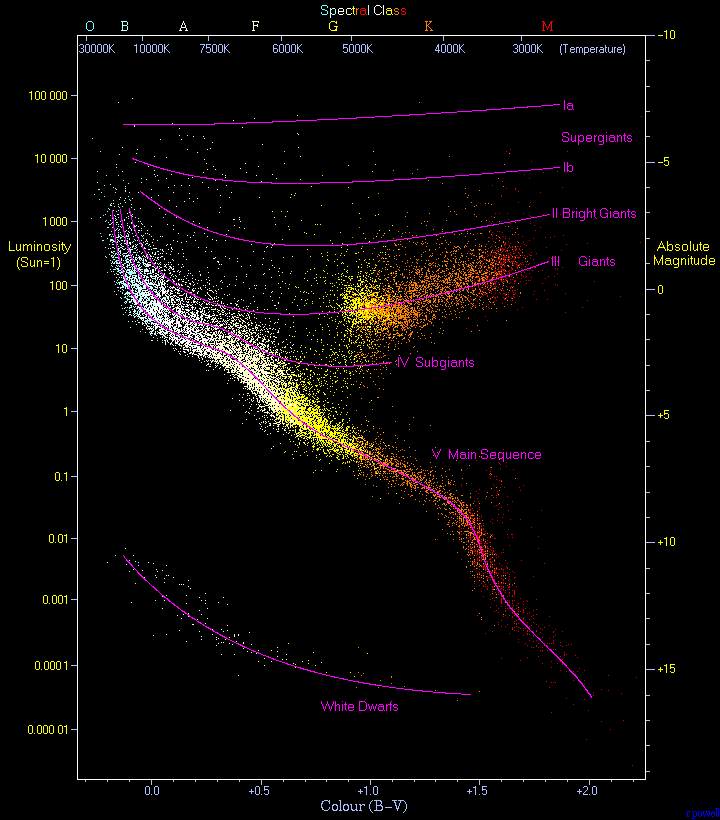

Star concepts are the set of ideas and tools astronomers use to describe, classify, and understand stars. A star is a luminous ball of plasma held together by its own gravity, generating energy through nuclear fusion in its core. The observable universe holds an estimated 1022 to 1024 stars, with over 100 billion in the Milky Way alone. By mass, a typical Milky Way star is roughly 71% hydrogen and 27% helium, with less than 2% heavier elements.

Richard Powell / atlasoftheuniverse.com, CC BY-SA 2.5
{kind=link}
Spectral Classification
Stars are sorted by surface temperature into the Harvard spectral sequence: O, B, A, F, G, K, M, running from the hottest (above 33,000 K for O-type stars) to the coolest (2,300–3,900 K for M-type). Each letter is subdivided 0–9, so the Sun is classified G2. The sequence was established in the 1890s at the Harvard College Observatory, where Williamina Fleming, Antonia Maury, and Annie Jump Cannon organised thousands of stellar spectra into the system still used today.
A second dimension was added in 1943 by William Wilson Morgan and Philip Childs Keenan. Their Morgan–Keenan (MK) system assigns a Roman numeral luminosity class based on spectral line widths, which are sensitive to the pressure in a star's atmosphere. Classes range from Ia (luminous supergiants) through III (normal giants) to V (main-sequence dwarfs). The Sun's full MK type is G2V.
The Hertzsprung–Russell Diagram
The Hertzsprung–Russell (HR) diagram plots stellar luminosity against surface temperature, with temperature increasing to the left. Developed independently by Ejnar Hertzsprung (1911) and Henry Norris Russell (1913), it remains the single most useful map of the stellar zoo.
About 90% of all known stars fall on the diagonal main sequence, which runs from hot, massive O stars at the upper left to cool, low-mass M dwarfs at the lower right. A star's position on this band is set almost entirely by its mass. Above and to the right sit the red giants and supergiants: evolved stars with expanded envelopes and cool surfaces. In the lower left corner lie the white dwarfs, faint but very common stellar remnants. A diagonal instability strip crosses the diagram, hosting pulsating variables such as Cepheids and RR Lyrae stars.
Mass, Luminosity, and Lifetime
Mass is the single most important property of a star. It controls the luminosity, lifespan, and ultimate fate. For main-sequence stars between about 0.43 and 2 solar masses, luminosity scales roughly as the fourth power of mass: double the mass and a star shines about 16 times brighter. This steep relationship means that massive stars burn through their fuel far faster than lighter ones.
A star's main-sequence lifetime falls roughly as M–2.5. The Sun, at about 4.5 billion years into a 10 billion year main-sequence life, is middle-aged. A 20 solar-mass O star exhausts its hydrogen in just a few million years, while a 0.08 solar-mass red dwarf could keep burning for 12 trillion years, far longer than the current age of the universe.
Stellar Endpoints
How a star ends depends on its mass. Stars below about 8 solar masses swell into red giants, shed their outer layers as a planetary nebula, and leave behind a white dwarf supported by electron degeneracy pressure. Stars between roughly 8 and 20 solar masses end in a core-collapse supernova, leaving a neutron star about 10 km across. Above about 20 solar masses, the remnant core can exceed the neutron degeneracy limit and collapse into a black hole. The material flung out by supernovae enriches the interstellar medium with heavy elements, seeding the next generation of stars.